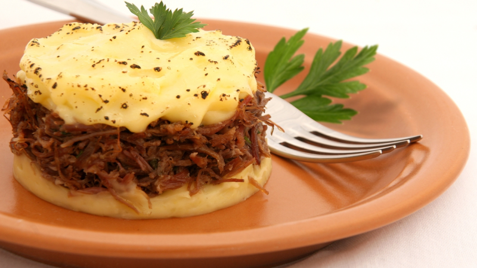

Almoço
Moqueca de Peixe
Moqueca capixaba aromática com peixe fresco, tomates e coentro.
⏱️ 60 min
👤 6 porções
🔥 Médio
Jantar

Escondidinho de Carne Seca
Camadas cremosas de purê de mandioca com carne seca desfiada e queijo gratinado.
⏱️ 90 min
👤 6 porções
🔥 Médio
Almoço

Frango Assado
Frango assado crocante com ervas aromáticas e acompanhamento de legumes.
⏱️ 80 min
👤 4 porções
🔥 Fácil
Sobremesas

Brigadeiro Gourmet
O clássico brigadeiro brasileiro com acabamento refinado e cobertura de chocolate belga.
⏱️ 30 min
👤 30 porções
🔥 Fácil
Sobremesas
Pudim de Leite Condensado
Pudim cremoso com calda de caramelo, sobremesa perfeita para qualquer ocasião.
⏱️ 90 min
👤 10 porções
🔥 Médio
Lanches

Coxinha de Frango
Salgado brasileiro clássico com recheio cremoso de frango desfiado.
⏱️ 90 min
👤 30 porções
🔥 Difícil
Lanches
Pastel de Feira
Pastel crocante recheado com queijo e presunto, tradicional das feiras brasileiras.
⏱️ 45 min
👤 30 porções
🔥 Médio
Café da Manhã

Pão de Queijo Mineiro
O autêntico pão de queijo mineiro, crocante por fora e macio por dentro, perfeito para o café da manhã.
⏱️ 40 min
👤 20 porções
🔥 Fácil